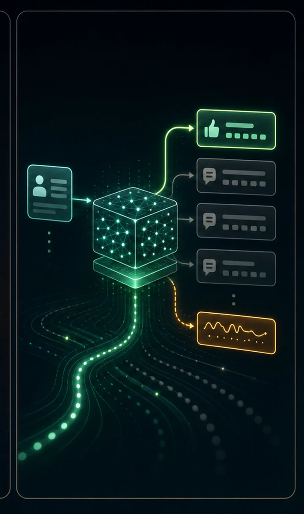

A base model only continues text. The step that made ChatGPT is instruction tuning: fine-tune on (instruction, response) pairs, with loss masking so the model is trained only on the answer, not the question.
Same weights, one nudge — but now it follows commands instead of rambling. Ask the base model to 'say hello' and it quotes Shakespeare; the tuned model replies politely.
A pretrained base model models P(text) — it continues whatever you give it, it doesn't obey. Supervised fine-tuning (SFT) keeps training that same model on curated (instruction, response) pairs wrapped in a fixed template, teaching the conditional distribution P(response | instruction). It's still ordinary next-token cross-entropy — only the data has changed.
The crucial trick is loss masking: gradients are computed only on the response tokens (the prompt's labels are ignored), so the model learns to answer a question rather than to generate more questions. This single step — one nudge on top of a base model — is what turned GPT-3 into InstructGPT and, ultimately, ChatGPT.

import importlib.util
import os
import torch
import torch.nn.functional as F
# Reuse the model, tokenizer, and config from #9.
spec = importlib.util.spec_from_file_location("tiny_gpt", "09_tiny_gpt.py")
tg = importlib.util.module_from_spec(spec)
spec.loader.exec_module(tg)
DEVICE = tg.DEVICE
BLOCK_SIZE = tg.BLOCK_SIZE
CHAT_PATH = "tiny_gpt_chat.pt" # the fine-tuned ("chat") model
FINETUNE_STEPS = 1200
LR = 1e-3
# Instruction -> response pairs. (Kept to characters our Shakespeare vocab
# knows: letters, space, comma, period. No digits/symbols outside the vocab.)
PAIRS = [
("say hello", "good morrow to you, friend."),
("who are you", "i am your humble servant."),
("how are you", "i am well, i thank you."),
("say farewell", "farewell, and good night."),
("praise the king", "long live the noble king."),
("are you happy", "yes, my heart is glad."),
("what is love", "love is a gentle madness."),
("good night", "sleep well, sweet friend."),
]
def prompt_of(instruction):
"""The fixed template. Generation feeds everything up to 'ANSWER: '."""
return f"QUESTION: {instruction}\nANSWER: "
def make_example(instruction, response):
"""Build (x, y) where y masks the prompt so loss falls only on the answer."""
prompt = prompt_of(instruction)
full = prompt + response + "\n"
ids = tg.encode(full)
assert len(ids) <= BLOCK_SIZE + 1, f"example too long: {full!r}"
x = torch.tensor(ids[:-1], device=DEVICE)
y = torch.tensor(ids[1:], device=DEVICE)
# Mask every target that lies in the prompt region: -100 is ignored by
# cross_entropy, so no gradient comes from predicting the question.
prompt_len = len(tg.encode(prompt))
y[:prompt_len - 1] = -100
return x.unsqueeze(0), y.unsqueeze(0)
def finetune():
"""Load the base model and instruction-tune it; save to CHAT_PATH."""
model = tg.TinyGPT().to(DEVICE)
base = torch.load(tg.CKPT_PATH, map_location=DEVICE)
model.load_state_dict(base["model"]) # <-- start from the BASE model
print(f"loaded base model from {tg.CKPT_PATH}; instruction-tuning...\n")
optimizer = torch.optim.AdamW(model.parameters(), lr=LR)
model.train()
for step in range(FINETUNE_STEPS + 1):
instruction, response = PAIRS[torch.randint(len(PAIRS), (1,)).item()]
x, y = make_example(instruction, response)
logits, _ = model(x) # (1, T, vocab)
loss = F.cross_entropy(
logits.view(-1, logits.size(-1)), y.view(-1), ignore_index=-100
)
optimizer.zero_grad(set_to_none=True)
loss.backward()
optimizer.step()
if step % 200 == 0:
print(f"step {step:4d} answer-loss {loss.item():.3f}")
torch.save({"model": model.state_dict(), "chars": tg.chars}, CHAT_PATH)
print(f"\nsaved fine-tuned chat model -> {CHAT_PATH}")
return model
@torch.no_grad()
def answer(model, instruction, max_new=60):
"""Greedy-decode an answer to one instruction, stopping at the newline."""
prompt = prompt_of(instruction)
idx = torch.tensor([tg.encode(prompt)], device=DEVICE)
for _ in range(max_new):
logits, _ = model(idx[:, -BLOCK_SIZE:])
next_id = logits[:, -1, :].argmax(dim=-1, keepdim=True)
if tg.itos[next_id.item()] == "\n":
break
idx = torch.cat([idx, next_id], dim=1)
full = tg.decode(idx[0].tolist())
return full[len(prompt):]
def load_or_finetune():
if os.path.exists(CHAT_PATH):
model = tg.TinyGPT().to(DEVICE)
model.load_state_dict(torch.load(CHAT_PATH, map_location=DEVICE)["model"])
print(f"loaded fine-tuned model from {CHAT_PATH} "
f"(delete it to re-finetune)\n")
return model
if not os.path.exists(tg.CKPT_PATH):
raise SystemExit("No tiny_gpt.pt — run `python 09_tiny_gpt.py` first.")
return finetune()model = load_or_finetune()
model.eval()
print("=" * 60)
print("BASE model (tiny_gpt.pt) answering — it ignores instructions:")
print("=" * 60)
base = tg.TinyGPT().to(DEVICE)
base.load_state_dict(torch.load(tg.CKPT_PATH, map_location=DEVICE)["model"])
base.eval()
print(f" ask: 'say hello'\n ->{answer(base, 'say hello')!r}\n")
print("=" * 60)
print("FINE-TUNED model answering the SAME template — now it responds:")
print("=" * 60)
for instruction, _ in PAIRS:
print(f" Q: {instruction}")
print(f" A:{answer(model, instruction)}\n")
print("Same architecture, same weights+a nudge — but masking the loss onto")
print("the answers taught it to FOLLOW INSTRUCTIONS. That nudge, at scale,")
print("is the difference between GPT-3 and ChatGPT.")loaded fine-tuned model from tiny_gpt_chat.pt (delete it to re-finetune) ============================================================ BASE model (tiny_gpt.pt) answering — it ignores instructions: ============================================================ ask: 'say hello' ->'I will not the world and the words,' ============================================================ FINE-TUNED model answering the SAME template — now it responds: ============================================================ Q: say hello A:good morrow to you, friend. Q: who are you A:i am your humble servant. Q: how are you A:i am well, i thank you. Q: say farewell A:farewell, and good night. Q: praise the king A:long live the noble king. Q: are you happy A:yes, my heart is glad. Q: what is love A:love is a gentle madness. Q: good night A:sleep well, sweet friend. Same architecture, same weights+a nudge — but masking the loss onto the answers taught it to FOLLOW INSTRUCTIONS. That nudge, at scale, is the difference between GPT-3 and ChatGPT.